Changelog for QGIS 3.22¶

QGIS 3.22 Białowieża is aimed at celebrating the 100-year anniversary of Białowieża National Park, Poland, which was established in 1921. Białowieża Forest is one of the world’s last primary woodlands, located on the border between Poland and Belarus. It is one of the few natural old-growth forests in temperate lowland Europe and has been protected for over 600 years. The outstanding value of Białowieża Forest has been acknowledged by its recognition as a UNESCO Natural World Heritage Site.
Białowieża Forest is named after the village Białowieża, which is located right in the middle of this woodland. It is one of the oldest settlements in the area, nowadays hosting numerous research and tourism activities. Today, there are three research institutions in the village: Białowieża Geobotanical Station, University of Warsaw, The Mammal Research Institute, Polish Academy of Sciences, and the Forest Research Institute, Department of Natural Forests. Additionally, a large number of scientists from Poland and abroad travel to Białowieża in order to carry out their studies, and as such, there are also other users of QGIS in the area, as well as additional projects which contribute to the Open Data and Open Source Software ecosystems, such as the Open Forest Data project.
You can learn more about the project and this release of QGIS at the dedicated project website, https://qgisbialowieza.pl.
This feature-packed release includes a vast number of user experience enhancements and controls added to various advanced functionalities. In addition to a host of additional mesh functionality and operational improvements, QGIS Desktop now includes annotation tools and support for annotation layers, amongst much, much more. For a whirlwind tour of all the new functionalities introduced, you can view the highlight reel video at https://youtu.be/U-RHBt6WZi8
We would also like to extend a big thank you to the developers, documenters, testers, and all the many folks out there who volunteer their time and effort (or fund people to do so) to make these releases possible. From the QGIS community, we hope you enjoy this release! If you wish to donate time, money, or otherwise get involved in making QGIS more awesome, please wander along to QGIS.ORG and lend a hand!
QGIS is supported by donors and sustaining members. A current list of donors who have made financial contributions large and small to the project can be seen on our donors list. If you would like to become an official project sustaining member, please visit our sustaining member page for details. Sponsoring QGIS helps us to fund our regular developer meetings, maintain project infrastructure, and fund bug fixing efforts. A complete list of current sponsors is provided below - our very great thank you to all of our sponsors!
QGIS is free software and you are under no obligation to pay anything to use it - in fact, we want to encourage people far and wide to use it regardless of what your financial or social status is - we believe empowering people with spatial decision-making tools will result in a better society for all of humanity.
Annotations¶
Feature: Annotation layer properties and effects¶
Additional properties for annotation layers now include the following:
An annotation layer properties window, containing some basic information about the layer and options to set scale ranges, opacity, blend mode and draw effects for the layer
An option to view the main annotation layer’s properties via the annotation toolbar (the main annotation layer is the hidden layer which is always present above all other map layers, so it’s impossible to open it’s property window via the layer tree)
Options to set an annotation layer’s opacity/blend mode/paint effect in the layer styling dock for interactive changes
This feature was developed by Nyall Dawson
Feature: Edit nodes in an annotation item¶
The modify annotation tool can now be used to edit nodes in an annotation item by clicking over an existing node and moving it. The user interactions follow the standard QGIS patterns as follows:
Left click to start the move
Second left click to apply changes
Right-click to cancel
Selecting a node and pressing delete will remove the node
Double clicking a segment will add a node
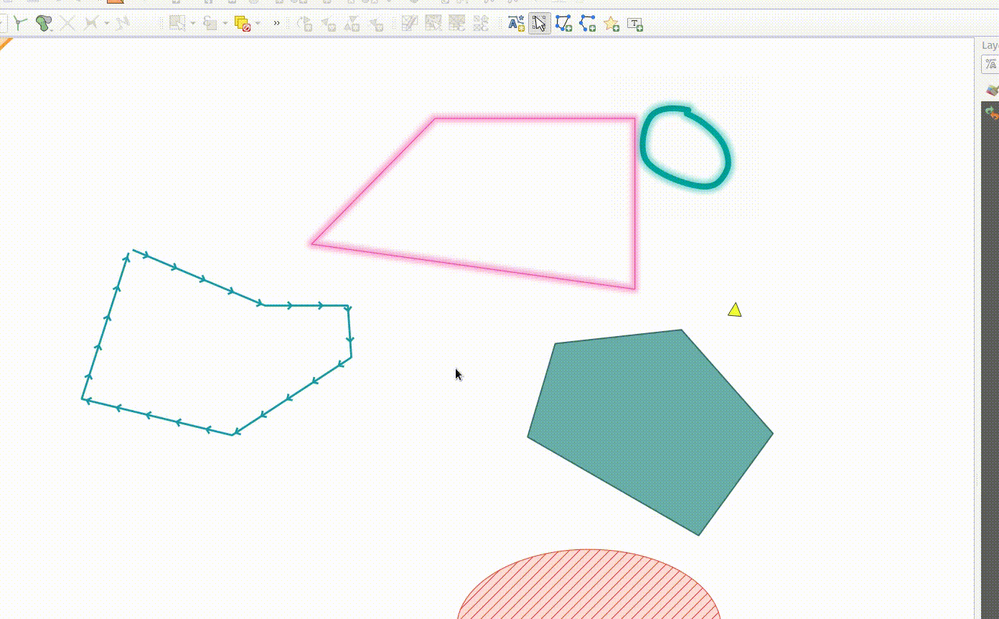
This feature was funded by the Swiss QGIS user group.
This feature was developed by Nyall Dawson
Feature: Move selected annotation with cursor keys¶
When an annotation item is selected it can be moved by pressing the cursor keys.
This functionality includes the ability to use keyboard shortcuts in a manner that follows the same interaction pattern as used with layout items:
shift + cursor: Big movementalt + cursor: 1px movement
This feature was developed by Nyall Dawson
Feature: Create line/ polygon annotation item tools¶
Functions for creating new line and polygon annotation items have been added to the annotation tools.
These support the same interactions as drawing vector features, such as snapping, tracing, cad dock, backspace to remove vertices, curve and stream digitizing modes, and others.
This feature was funded by QGIS Swiss User Group
This feature was developed by Nyall Dawson
Feature: New point text tool¶
A framework has been created for map tools to create new annotation items, including the ability to create new point text annotation items.

This feature was funded by the Swiss QGIS user group
This feature was developed by Nyall Dawson
Feature: Annotations toolbar¶
A new annotations toolbar has been added which provides actions for the following:
Create a new empty annotation layer in the current project.
The “Modify Annotations” tool, which provides an interface for editing existing annotations.
The supported operations for the modify annotations feature include:
Clicking on an existing annotation to select it to shows its properties in the layer styling dock, including symbol, reference scale, z index, etc/
Left click on a selected annotation item to start moving it. A right click or escape cancels the move, while a second left click will confirm the move.
Pressing the delete key while an annotation is selected will delete that annotation
This feature was funded by the Swiss QGIS User group
This feature was developed by Nyall Dawson
Map Tools¶
Feature: Add a “measure bearing” map tool¶
This tool behaves similarly to the existing “measure angle” map tool, but requires the user only to click two points on the map and displays the bearing between these points.
This feature was developed by Nyall Dawson
User Interface¶
Feature: Toggle editing on multiple selected layers¶
The toggle editing action has been modified to support activation on all selected layers, making it easy to start and stop editing sessions across multiple layers simultaneously. Although the editing session status for all selected layers may not be the same, all selected layers will be toggled to an active or inactive state as the inverse of the current state of the currently active layer. This functionality is applied to the menu item Layer > Toggle Editing, the Toggle Editing button on the digitizing toolbar, and the Toggle Editing entry in the layers context menu.
This feature was developed by Stefanos Natsis
Feature: Identify layer groups and all selected layers¶
Whilst the identify features tool supported multiple selection modes, the “current layer” mode has been extended to support the selection of layer groups, and will identify features from all selected layers. Only features from visible layers within a layer group will be identified.
This feature was developed by Stefanos Natsis
Feature: Add a ‘Show in Files’ action for all file items in browser¶
Opens a file explorer window and directly selects the file
Also fixes the existing “File Properties” action so that it shows regardless of the file type, and doesn’t show incorrectly in some circumstances.

This feature was developed by Nyall Dawson
Symbology¶
Feature: Custom units for geometry generator symbol layers¶
Geometry generators now expose an option for users to select which units should be used for returning geometries in, rather than only supporting the units defined in the layer CRS. This is especially useful in situations where the symbol is not associated with a layer, such as when used in layout items.
The update provides the following unit choices:
Map units (the default, previous behavior)
Millimeters
Pixels
Inches
Points
When millimeters, pixels, inches or points are selected, then the @map_geometry variable will be available for use within the expression, containing the feature geometry in the specified units (relative to the map frame), whilst the $geometry variable remains available within the expression in the layer CRS map units.
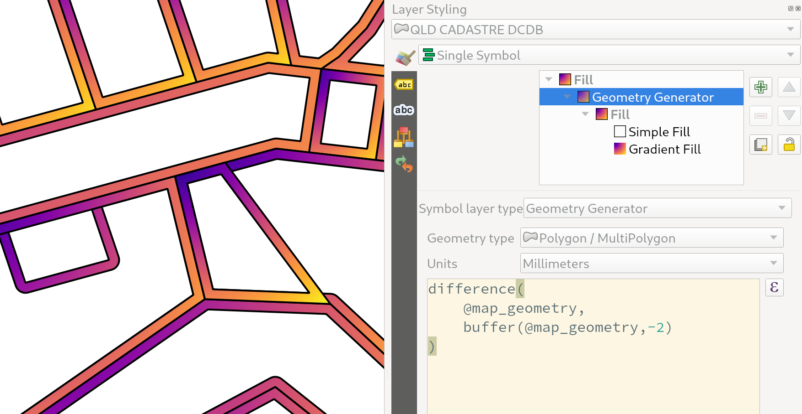
This feature was developed by Nyall Dawson
Feature: Symbology reference scale for vector layers¶
An option has been exposed that allows the configuration of reference scales for feature symbologies on vector layers.
In practice, this defines the relevant map scale at which the configured symbology and label sizes may be referenced with paper-based units, such as millimeters or points. These unit sizes will then be automatically scaled accordingly, based on the ratio of the relevant reference scale and the scale of the current map view.
For instance, where a line layer is configured to use a 2mm wide line using a reference scale of 1:2000, the feature would be rendered using 4mm wide lines at a map scale of 1:1000, or 1mm with a map scale of 1:4000.
This feature was funded by North Road, thanks to SLYR
This feature was developed by Nyall Dawson
Feature: Invert colors filter option for raster rendering¶
It is now possible to invert the colors of a raster being rendered via a new invert colors option. This can come in handy on a number of occasions. For example, a light raster base map can quickly be turned into a dark base map without the need to recreate a new raster dataset.

This feature was developed by Mathieu Pellerin
Labelling¶
Feature: Specify unit for data defined label rotation¶
Specify the angle unit for data defined label rotation
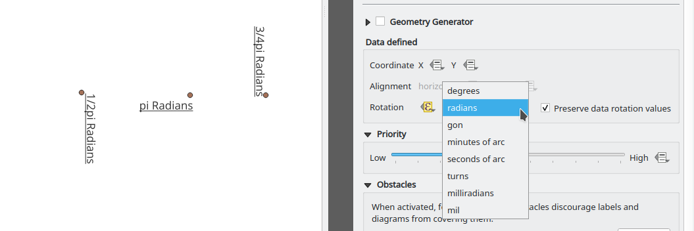
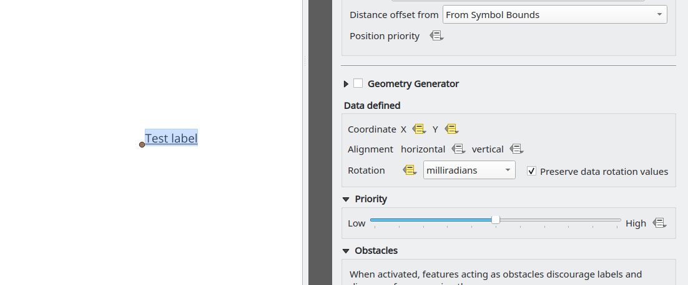
This feature was developed by Damiano Lombardi
Mesh¶
Feature: Create new mesh layer¶
QGIS now supports the creation of new mesh layers.
The mesh creation supports the following creation formats:
New empty mesh layer
New mesh frame based on an existing mesh within the project
New mesh frame based on an existing mesh from a file

This feature was funded by Hydrotec
This feature was developed by Lutra Consulting (Vincent Cloarec)
Feature: Mesh frame editing¶
QGIS now supports mesh frame editing, which supports the ability to ensure mesh consistency and provides the ability to undo and redo edit operations.
This introduces the QgsMeshEditor class to the QGIS Python API, which allows for performing edit operations, and the QgsTopologicalMesh class which is not exposed to the Python API but is used for ensuring that edited mesh elements remain topologically correct and perform data modifications.
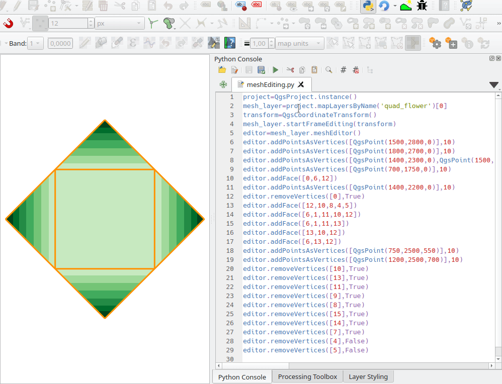
This feature was funded by Hydrotec
This feature was developed by Lutra Consulting (Vincent Cloarec)
Feature: Mesh frame editing lifecycle¶
This feature has been introduced in the scope of QEP 228 which outlines the introduction of Mesh Editing tools, implements changes to the User Interface, and exposes new functionality to the API.
Mesh frame editing now supports a complete set of functionalities for controlling the editing lifecycle operations, including start, commit, roll back, and cancel, similar to vector layers.

This feature was funded by Hydrotec
This feature was developed by Lutra Consulting (Vincent Cloarec)
Feature: Edit mesh map tool¶
This feature has been introduced in the scope of QEP 228 which outlines the introduction of Mesh Editing tools.
Mesh editing map tool now supports the following operations:
Add vertices/ faces
Select vertices/ faces
Remove vertices/ faces
Change the Z values of vertices
Move vertices
Interaction with edges
Split faces

This feature was funded by Hydrotec
This feature was developed by Lutra Consulting (Vincent Cloarec)
Feature: Advanced mesh editing enhancements¶
This feature has been introduced in the scope of QEP 228 which outlines the introduction of Mesh Editing tools, implements changes to the User Interface, and exposes new functionality to the API.
The QGIS User Interface provides delaunay triangulation and face refinement functions, which are accessible from the context menu in the map when vertices and/ or faces are selected from a mesh layer. These options may be migrated to buttons in the mesh toolbar once further functionality has been introduced.
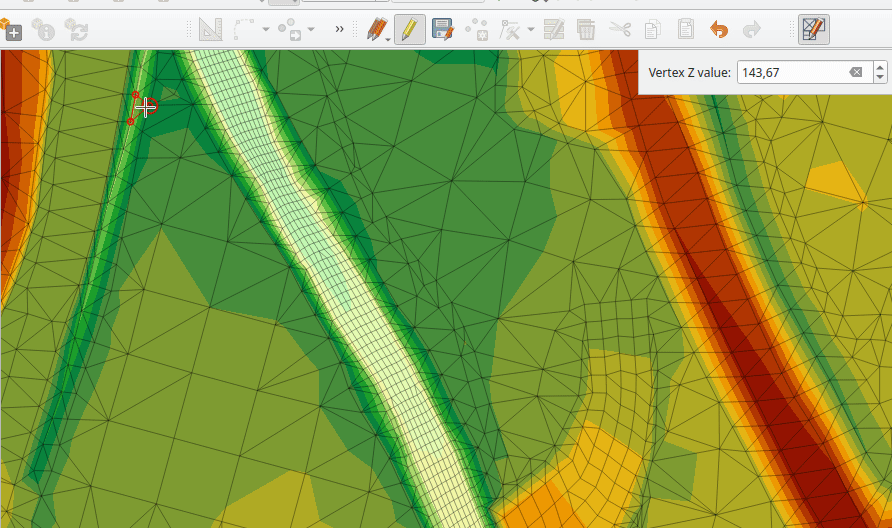
The QGIS API has also been extended to support advanced editing for meshes, which is introduced by a new interface abstract class QgsMeshAdvancedEditing. Derived classes of this class can be implemented to make some advanced editing on a mesh: generation of faces to add to the mesh, particular operation on many faces or vertices. The advanced editing is made by passing a QgsMeshAdvancedEditing instance to a QgsmeshEditor instance, and the editing is applied as other editing operations.
Two advanced editing functions are implemented within this feature:
Delaunay triangulation
Faces refinement
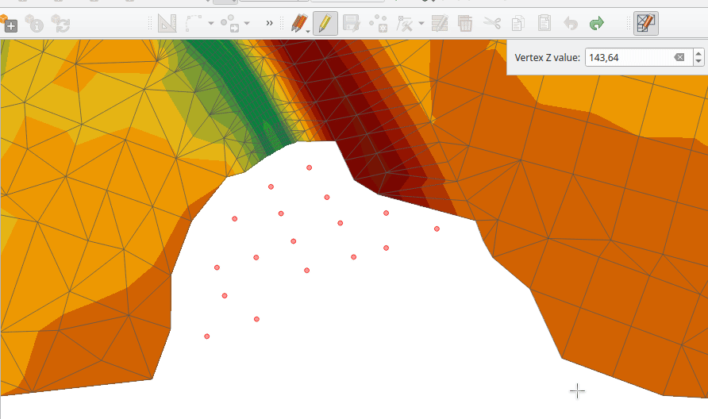
This feature was funded by Hydrotec
This feature was developed by Lutra Consulting (Vincent Cloarec)
Feature: Select editable mesh elements by polygon¶
Users can now select mesh elements within a digitized area when performing mesh editing. Each vertex of the polygon is digitized using a left click, whilst right clicking will complete and validate the polygon to select intersecting mesh elements (faces and vertices). Using the backspace key will allow the user to remove last vertex, and the Escape key will allow users to return to the normal digitizing mode.
This function supports two behavior modes with different selection predicates as follows:
Touching elements (default), or partially included/ intersecting elements will be selected (green rubber band).
Contained, or completely included elements will be selected (blue rubber band).
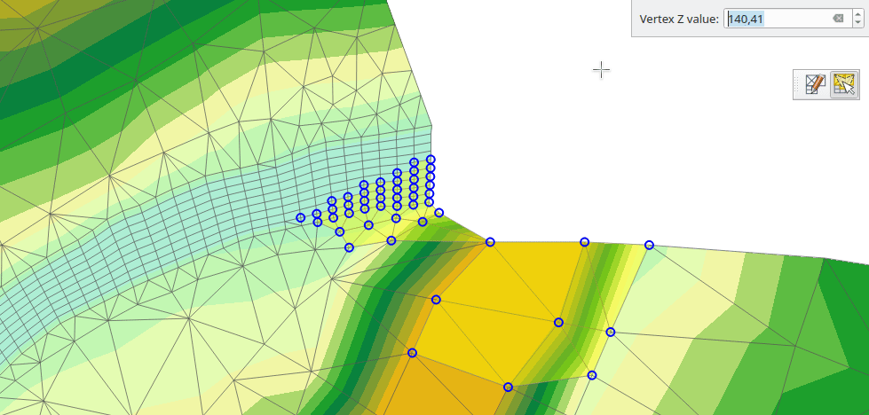
This feature was funded by Hydrotec
This feature was developed by Lutra Consulting (Vincent Cloarec)
Feature: Select mesh elements by existing geometries¶
Two actions have been added for selecting mesh elements from geometries present in existing vector layers.
After selecting vector layer geometries, the user can use these tools to select mesh elements using the touching or containing predicates.

This feature was funded by Hydrotec
This feature was developed by Lutra Consulting (Vincent Cloarec)
Feature: Select mesh elements by expression¶
An interface has been created for selecting mesh elements by expression during mesh editing. In addition, a contextual expression function $face_area has been added that returns the area of a mesh face.
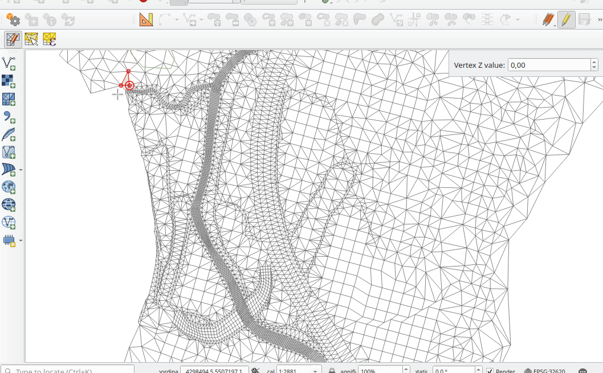
This feature was funded by Hydrotec
This feature was developed by Lutra Consulting (Vincent Cloarec)
Feature: Transform single vertex¶
A new editing mode for the mesh transform tool allows the user to import the coordinates of a single selected vertex.
The tool button on the top right of the Transform Mesh Vertices window toggles this mode, and each time a single vertex is selected it will automatically populate the available fields for the user to adjust the vertex coordinates accordingly.
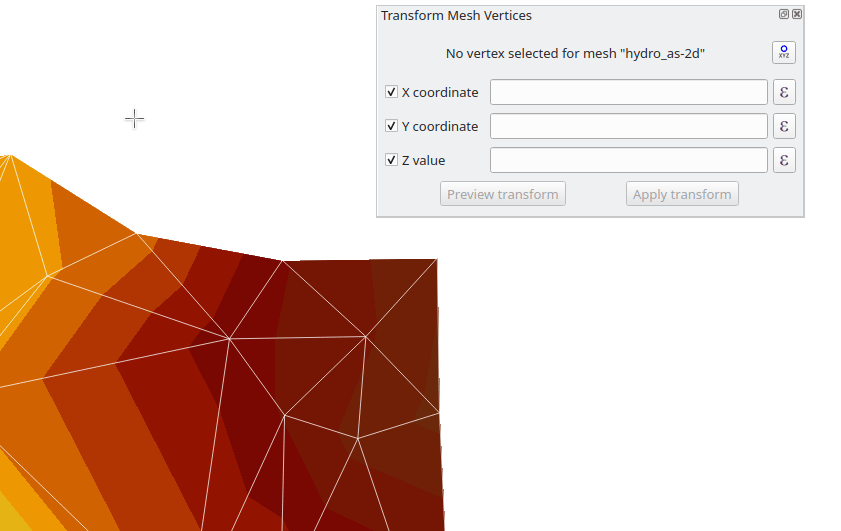
This feature was funded by Hydrotec
This feature was developed by Lutra Consulting (Vincent Cloarec)
Feature: Reindex/ renumber mesh layer¶
Users are now able to reindex (or renumber) the vertices and faces of a mesh layer during editing. The renumbering is an optimization of the mesh with the Cuthill-McKee algorithm.

This feature was funded by Hydrotec
This feature was developed by Lutra Consulting (Vincent Cloarec)
Feature: Force mesh by polylines¶
When editing mesh features, users can now transform features by forcing them to conform to a surface defined by existing polylines, or break lines. Faces are forced to follow the break lines, that is, edges of encountered faces have to be on these lines. Users may select break line geometries and then use the dedicated button to transform intersecting mesh elements.
Options provided for the transform include:
Adding new vertices when the lines cut the internal edges
Interpolating the Z value of newly added vertices on the mesh or from the lines
Tolerance setting for shifting existing vertices into place and preventing the creation of new vertices along line within the specified distance
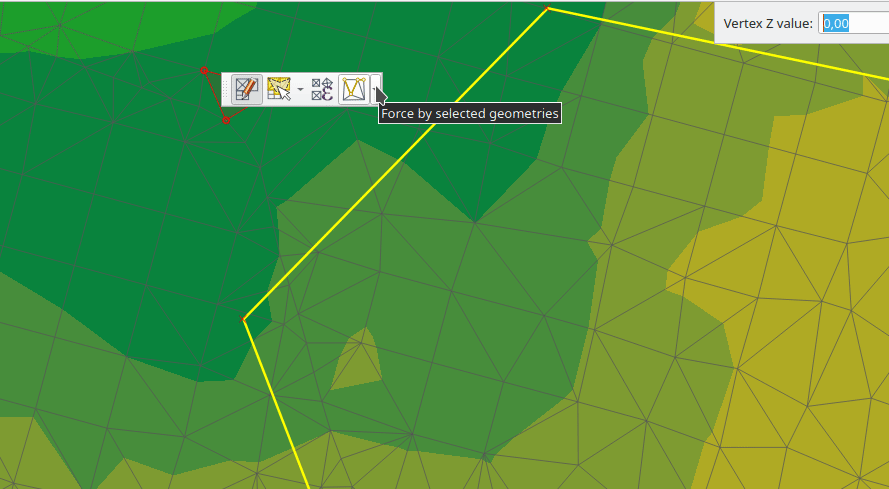
Whilst the term “break lines” is typically used to refer to polylines that constrain a surface or TIN to the defined positions, these break lines are often components of the mesh itself, and additional operations would continue to constrain the surface to these lines. This functionality specifically transforms the surface in a static manner, so that future operations are not constrained to the lines used to transform the mesh elements.
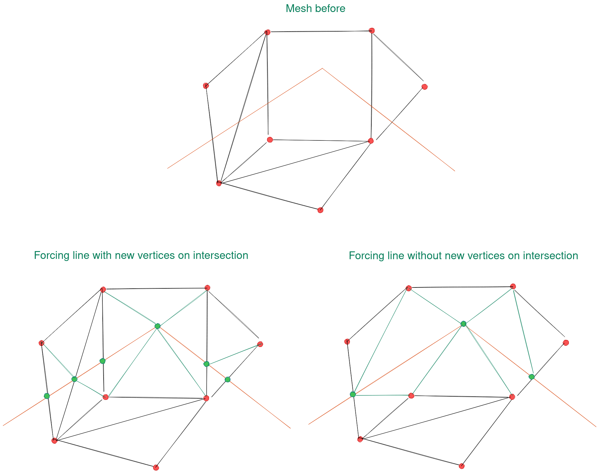
This feature was funded by Hydrotec
This feature was developed by Lutra Consulting (Vincent Cloarec)
Feature: Mesh transform by expression¶
User can perform geometrical transformations on a mesh using an expression to change the vertices’ coordinates. All coordinates (X,Y,Z) of selected vertices can be calculated with an expression, allowing transformation of the mesh while the mesh is still valid.
With a valid expression, selecting the “Preview transform” option will calculate the new expression based mesh coordinates and identify whether the transform is valid and may be applied.
If the preview is green, the transformed mesh is valid and the user can apply the transformation. If the preview is red, the transformed mesh is invalid and user cannot apply the transformation.
Once applied, users have the option to undo or redo the operation.
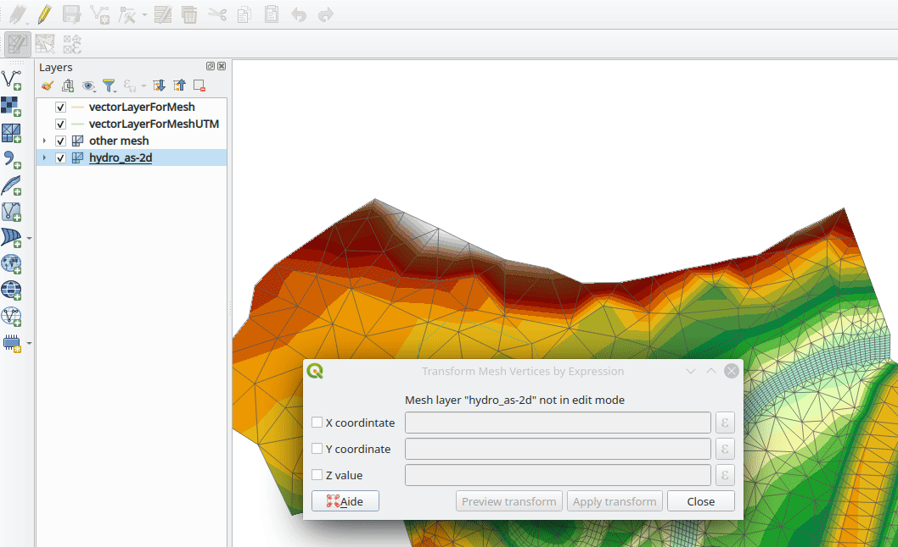
This feature was funded by Hydrotec
This feature was developed by Lutra Consulting (Vincent Cloarec)
Rendering¶
Feature: Allow using physical DPI for map canvas¶
A new setting has been made available for correctly using the physical screen DPI instead of logical DPI, allowing symbols to be rendered equally on different attached devices (hi dpi and low dpi), and in mobile applications such as QField.
This setting is disabled by default to ensure that symbols are not scaled differently than they were in previous versions of QGIS.
This feature was developed by Matthias Kuhn
Feature: Data defined raster layer opacity¶
A new control has been exposed which allows the opacity of a raster to be data defined. This allows for the varied representation of a raster layer, in various contexts, such as on different pages of an atlas, being dependent on the visibility of another layer, or adjusted by temporal variables etc.
Additionally, a “redraw layer only” temporal mode for raster layers has been added, which causes a raster layer to be redrawn on each new animation frame as in the equivalent functionality for vector layers. This may be useful in many contexts, such as when the layer uses time-based expression values like the data defined renderer opacity to fade in or out a raster layer from an animation.
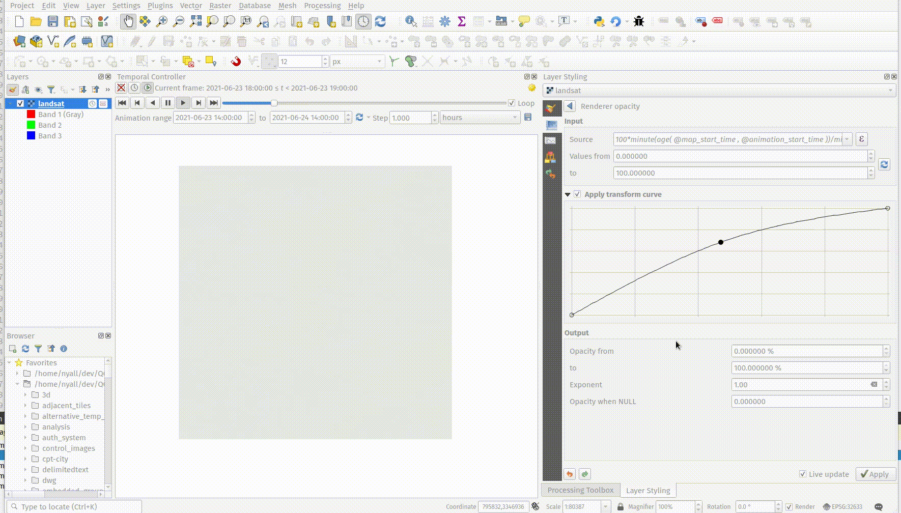
This feature was developed by Nyall Dawson
Print Layouts¶
Feature: Predefined scale support for point-driven atlases¶
Layout map items gained support for the predefined scale mode when controlled by point-driven atlases. This ensures the correct behavior is observed when atlas features are multipoint geometries with varying envelope areas.
This feature was developed by Mathieu Pellerin
Feature: Indentation of legend groups and subgroups¶
Two new entries have been added to the “Spacing” section of the Legend properties:
Indent of group items
Indent of subgroup items
Items belonging to groups or subgroups will be shifted right by the specified amount. When legend patches are added to the left of entries they will be indented as well.
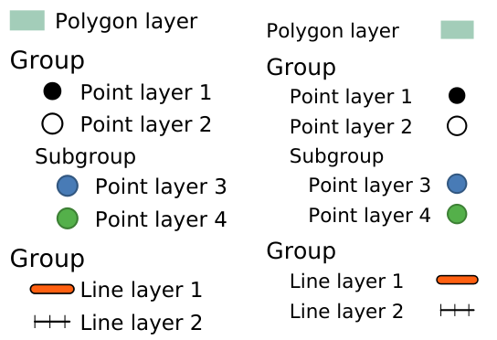
This feature was developed by Jürnjakob Dugge
Expressions¶
Feature: Mesh expression functions for vertex_as_point and vertex_z¶
Expressions have been added for interacting with mesh layers, with the following functions returning value related to the current vertex:
$vertex_as_point: returns the current vertex as a geometry point$vertex_z: returns the Z value of the current vertex.
These two functions are contextual and need to be added in a QgsExpressionContext with QgsExpressionContextUtils::meshExpressionScope() for the creation of a specific QgsExpressionScope.
This feature was funded by Hydrotec
This feature was developed by Lutra Consulting (Vincent Cloarec)
Feature: Expression function for $z¶
The z value for the current feature in an expression context can now be retrieved using $z
This feature was funded by Hydrotec
This feature was developed by Lutra Consulting (Vincent Cloarec)
Feature: Affine transform expression¶
An affine_transform function has been added to QGIS Expressions.
This feature was developed by Antoine Facchini
Feature: Straight distance2d expression¶
A straight_distance2d function is now available in QGIS expressions for retrieving the direct/ Euclidean distance between the first and last vertex of a curve geometry feature.
This feature was developed by Antoine Facchini
Feature: Add sinuosity expression¶
A sinuosity function has been added to QGIS expressions.
This feature was developed by Loïc Bartoletti
Feature: New exif() and exif_geotag() functions¶
A new pair of functions was added to the QGIS expression engine to read exif tags from image files. The two functions are:
exif(path, tag) : this function returns the value of a given tag string for the provided image file path; when the second optional parameter isn’t provided, the function will return a map object containing all exif tags and their values.
exif_geotag(path) : this function returns a point geometry from the exif geotags containing in the provided image file path.
This feature was developed by Mathieu Pellerin
Digitising¶
Feature: Geometry snapper algorithm optimization¶
The geometry snapper is now blazingly fast after benefiting from another round of optimization work. Small snapping distance values hanging QGIS forever is now a thing of the past.
This feature was funded by SwissTierras Colombia
This feature was developed by Mathieu Pellerin
Feature: Convert to curve with vertex tool¶
The ability to convert vertices to or from curved vertices is now supported with the Vertex tool, allowing users to convert vertices with the “C” and “O” keys.
Additionally, methods for convertVertex() have been introduced for the QgsGeometry and QgsCompoundCurve objects in the QGIS API.
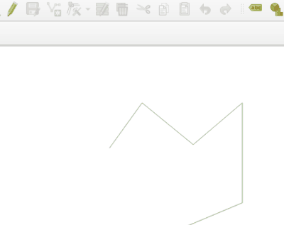
This feature was funded by Swiss QGIS user group
This feature was developed by Olivier Dalang
Feature: Add Z/M support to Advanced Digitizing¶
The QGIS Advanced Digitizing tools now support the entering of user-defined Z and M values, greatly improving the available control for newly digitized features such as components of 3D networks.

This feature was funded by Métropole Européenne de Lille @Jean-Roc
This feature was developed by Loïc Bartoletti
Data Management¶
Feature: Drag and Drop support for external storage file widget¶
Users may now use Drag and Drop support on an external resource widget when an external storage has been defined and configured appropriately.
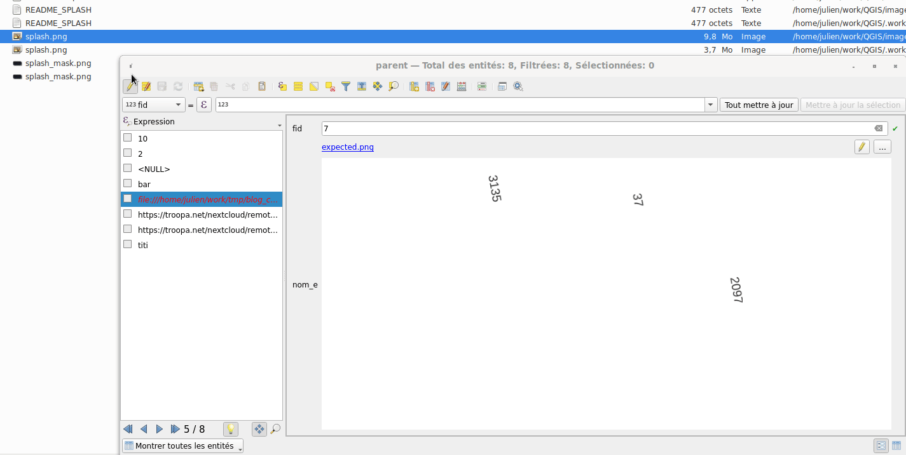
This feature was funded by Lille Metropole
This feature was developed by Julien Cabieces
Feature: File-based dataset size and last modified date in the layer properties dialog¶
The layer properties dialog’s information panel now shows the size and last modified date of file-based datasets, removing the need to retrieve these details from a file manager. These additional details are also visible in the browser panel’s information section. For datasets formed of more than a single file, the size will reflect the sum of all the auxiliary/ sidecar files forming the dataset.

This feature was developed by Mathieu Pellerin
Feature: Rename files in QGIS Browser¶
A rename action has been added to the manage submenu for files in the QGIS browser. If the renamed file corresponds to a spatial dataset with multiple auxiliary/ sidecar files, then these will be renamed accordingly.
Additionally, users are warned if the file is a layer which exists in the current project and are asked whether they want to automatically update all the layer paths accordingly.
This feature was developed by Nyall Dawson
Feature: Move GPS tools “add gpx layer” functionality to Data Source Manager¶
Functionality from the GPS tools plugin to add GPX layers has been moved to a new “Add GPS Data” page in the data source manager.
This feature was developed by Nyall Dawson
Feature: Load projects from GPKG using drag and drop¶
Historically, when using drag and drop functionality with the GPKG format, only feature layers were represented to load into QGIS.
QGIS will now show projects embedded in a GPKG when the GPKG file is added to the QGIS canvas using the drag and drop functionality.
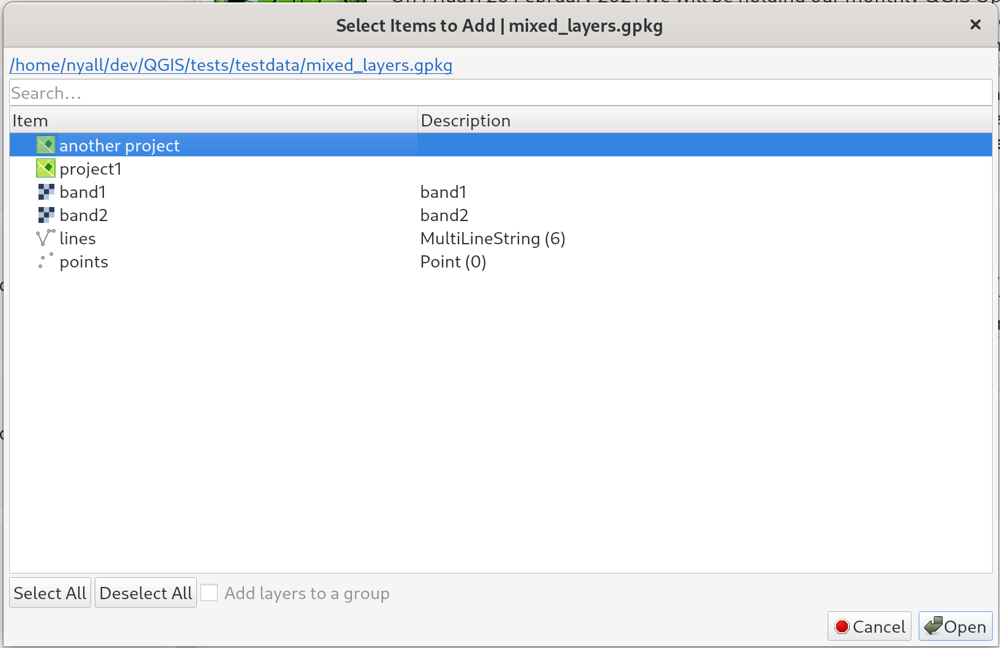
This feature was developed by Nyall Dawson
Feature: External Storage support¶
QGIS now includes an External Storage API, in line with the proposal outlined in QEP 196.
The implementation includes the following features:
External storage API
Registry that contains all external storage backends
SimpleCopy external storage that stores the selected external resource on a specific location on disk
WebDAV support
In addition, a widget has been added to allow for the configuration and visualization of external storage backends and components. The storage mode (File or Directory) widget is not currently visible when an external storage is selected, and relative path settings are hidden as relative paths are not relevant to external storage data.

This feature was funded by Lille Metropole
This feature was developed by Julien Cabieces
Forms and Widgets¶
Feature: Drag & Drop designer form actions¶
Layer actions are now available in forms using the drag and drop designer
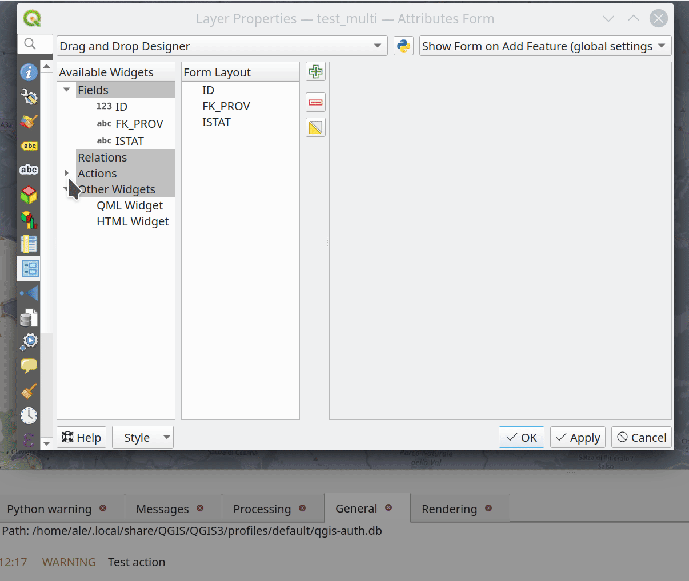
This feature was funded by Kanton Solothurn, Amt für Geoinformation
This feature was developed by Alessandro Pasotti
Layer Legend¶
Feature: Use placeholder icon in legend for raster layers¶
A new feature has been added to allow the selection of a placeholder image which may be used in the legend item of a raster or vector layer. This is very useful in certain instances such as when using raster layers with QGIS server, preventing long lists of palleted values from GetLegendGraphic requests and instead returning a tailored result, among various other use cases.

This feature was funded by Canton of Glarus
This feature was developed by mhugent
Analysis Tools¶
Feature: Add if() function to raster calculator¶
A long awaited feature has been for QGIS to support simple if() statements in the raster calculator.
Although conditional statements have been supported in the raster calculator for a while, the syntax and structure of the expressions was often verbose and complex.
The raster calculator will now support simple conditional statements with the common syntax of if ( condition , option1 , option2 ) whereby if the condition evaluates to true, the first option will be used, otherwise the second option will be used.

This feature was developed by Francesco Bursi
Feature: Virtual raster support in raster calculator¶
Virtual raster data provider support has been added to the QGIS raster calculator, which now allows users to perform raster calculator operations without specifying an output file or writing the resulting raster to disk.
This option is enabled via the UI by checking the “Create on-the-fly raster instead of writing layer to disk” checkbox in the raster calculator, and is also supported via the PyQgis API.
Resulting raster layers may be used in further analysis operations and allow for user specified raster names. Where a name is not provided for the resulting raster, it will be named according to the formula used to generate it.

This feature was developed by Francesco Bursi
Processing¶
Feature: Annotation layer parameter type for processing¶
An annotation layer parameter type has been added to the QGIS Processing Framework, which includes a new algorithm for converting main annotation layer items to secondary annotation layers. This is useful for moving items created in the main layer to a secondary layer, so that the item placement can be adjusted within the layer stack.
This feature was developed by Nyall Dawson
Feature: Add a POST option to the FileDownloader processing algorithm¶
Add a choice between performing GET or POST requests when downloading a file using the FileDownloader processing tool.
If the POST parameter is specified, some DATA can be added in the query.
This is useful in many contexts, such as for sending longer requests to the Overpass API using POST to download OSM data.
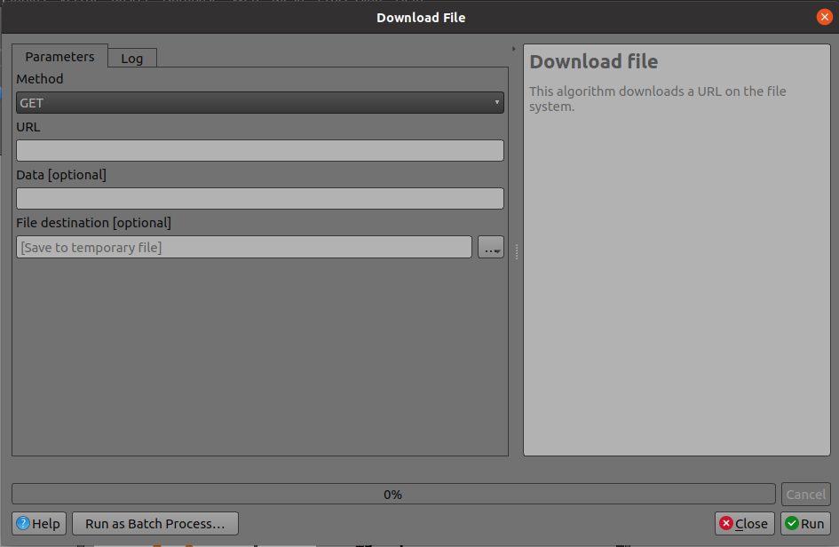
This feature was funded by 3Liz
This feature was developed by Étienne Trimaille
Feature: Add new “Select within distance” and “Extract within distance” algorithms¶
New algorithms have been provided which allow users to select or extract features from one layer which are within a certain distance of features from another reference layer.
The distance checking is heavily optimized, using spatial indices to restrict the number of features retrieved, and also automatically handling off the check to the database server for layers using the PostGIS provider.
Additionally, the distance parameter may be a data-defined. property
This feature was funded by QTIBIA Engineering
This feature was developed by Nyall Dawson
Feature: Point cloud parameter for Processing¶
A new point cloud parameter has been added to the QGIS Processing. Framework. this allows for the filtering of point cloud layers in the map layer and multiple layers parameters. This opens the door for native point cloud algorithms and improves point cloud support for 3rd party providers.
This feature was developed by Alexander Bruy
Feature: Remove the GPS importer plugin¶
The last of the GPS tools functionality has been ported to three new processing algorithms, namely:
Convert GPS data
Upload GPS data to device
Download GPS data from device
As a result, the GPS importer plugin has been made redundant and has been completely removed from QGIS.
This feature was developed by Nyall Dawson
Feature: Convert GPX feature type processing algorithm¶
The Convert GPX feature type tool has been ported from the GPS tools to a new processing algorithm, which uses the GPSBabel tool to convert GPX features from one type to another (e.g. converting all waypoint features to a route feature).
It is designed as a drop-in replacement for workflows which previously used this functionality from the GPS tools plugin, but with all the benefits and improvements that come automatically from being a part of of the QGIS Processing Framework.
This feature was developed by Nyall Dawson
Feature: Add incremental field with modulo option¶
This algorithm allows the user to add a column with an integer that will be incremented from START to the limit, with the possibility of grouping to resume at the value of START following the group.
An option called “modulo counter” is included which will reset the counter to the starting value if the modulo value is reached. Using a value of 0 for the modulo option will disable it.
This feature was developed by Loïc Bartoletti
Feature: Duration parameter¶
A brand new duration parameter was added to the processing framework to facilitate the creation of temporal-related algorithms.
This feature was developed by Mathieu Pellerin
Feature: Spatiotemporal ST-DBSCAN clustering algorithm¶
QGIS 3.22 ships with a brand new spatiotemporal ST-DBSCAN clustering algorithm which clusters point features based on a 2D implementation of spatiotemporal density-based clustering of applications with noise (ST-DBSCAN) algorithm.
For more details, please see the following papers:
Ester, M., H. P. Kriegel, J. Sander, and X. Xu, “A Density-Based Algorithm for Discovering Clusters in Large Spatial Databases with Noise”. In: Proceedings of the 2nd International Conference on Knowledge Discovery and Data Mining, Portland, OR, AAAI Press, pp. 226-231. 1996
Birant, Derya, and Alp Kut. “ST-DBSCAN: An algorithm for clustering spatial–temporal data.” Data & Knowledge Engineering 60.1 (2007): 208-221.
Peca, I., Fuchs, G., Vrotsou, K., Andrienko, N. V., & Andrienko, G. L. (2012). Scalable Cluster Analysis of Spatial Events. In EuroVA@ EuroVis.

This feature was developed by Mathieu Pellerin
Feature: Move non-native processing providers into independent plugins¶
In line with the discussion in QEP 226, the SAGA, GRASS, and OTB providers have been separated into independent plugins.
This should prevent issues with the loading of the Processing plugin in cases where any one of these providers is broken. It will also make it easier to convert them into third-party plugins in the future.
The SAGA and GRASS plugins are enabled by default, leaving the UX unchanged. The OTB provider can be enabled in the Plugin Manager if necessary, however, the enabling or disabling of any of these providers is now performed via the Plugin Manager as with any other plugin.
This is mostly an internal change, with the only visible change on the part of end-users being that the Plugin Manager is used to activate or deactivate the SAGA, GRASS, and OTB providers.
This feature was developed by Alexander Bruy
Application and Project Options¶
Feature: Export all keyboard shortcuts to XML or PDF¶
Historically, when exporting keyboard shortcuts to an XML file, QGIS would only export user-defined shortcuts. In instances where no customized shortcuts were found, an empty file would be created.
A new option has been provided to export all available keyboard shortcuts to the resulting XML file, or to generate a PDF output with a list of all defined QGIS shortcuts.

This feature was developed by Alexander Bruy
Feature: Move GPS Tools GPSbabel device configuration widget to global settings¶
The GPS babel configuration settings has been moved from a settings page in the deprecated GPS Tools plugin, to a new page in the main settings dialog.

This feature was developed by Nyall Dawson
Feature: Set default path structure for new projects¶
QGIS Desktop historically supported the definition of whether a particular project used an absolute or relative structure from the project properties, however, the default setting for this functionality was always configured to use relative paths.
A new setting has been exposed which allows users to set the default path structure to use either absolute or relative for new projects under the program options. In much the same way the default project format may be configured to use qgz or qgs, this is made available as a global property specific to each user profile.
This feature was developed by mhugent
Feature: Allow configuration of the max cache size from QGIS settings¶
In the qgis_global_settings.ini file, it’s possible to set the max image cache size in bytes.
The cache is used for caching symbology and layout images, If high resolution images are used for printing layout, then this value should be increased accordingly.
Default value is 100mb.
This feature was funded by 3Liz
This feature was developed by David Marteau
Browser¶
Feature: Improved delete action for browser files¶
The delete action used from the QGIS browser has been improved in various ways, including:
The action is more consistent and applied to all file type items
Multiple file deletion is now supported by selecting multiple file items in the browser which includes a confirmation prompt
Before deleting files, the current project is scanned to see if it is using any of the files. If so, a prompt is shown asking users if they want to cancel the deletion, or delete and remove layers, or delete and retain layers.
This feature was developed by Nyall Dawson
Feature: Connections API result widget¶
As a part of the ongoing efforts to port the table management functionalities from the DB Manager to the QGIS Browser, as detailed in QEP 205, a new SQL dialog is available from the browser panel which provides the ability to execute queries and SQL statements for the following elements:
DB connections
Schema items
Table items
The implementation also supports the following advanced functionalities:
A multi-threaded implementation for both API token fetching and row fetching results in non-blocking GUI operations
Fully interruptible API
Support for progressive loading of features in the results view (fetchMore API)

This feature was developed by Alessandro Pasotti
Data Providers¶
Feature: Transactions in MSSQL provider¶
Addition of transaction support to the MSSQL data provider.
There are no GUI-related changes, as users can enable transactional editing as with other providers. This is done by going to the Project Properties and checking “Automatically create transaction groups where possible” in the Data Sources tab.
By default, a running transaction in MSSQL will block other clients from accessing the same data. For example, if one client starts a transaction and adds or modifies a feature in a table, other clients will get blocked when trying to read any data from the table until the transaction is completed.
There is database-level configuration option, READ_COMMITTED_SNAPSHOT, which is OFF by default.
Activating this will change the behavior to function in a similar fashion as other RDBMS systems such as PostgreSQL, in that transactions do not cause blocking and enables the database to support multiple versions of data. This is a database-level property configured by the administrator and can not be automatically set by QGIS when connecting to the database, however it may be activated using the following query:
sql ALTER DATABASE my_db SET READ_COMMITTED_SNAPSHOT ON
In most instances where transactions are desired, activating this option is likely recommended to prevent freezing in QGIS or other clients.
This feature was funded by ms.GIS
This feature was developed by Lutra Consulting (Martin Dobias)
Feature: Show system and internal tables in sublayer selection¶
A check box has been added to the sublayer selection dialog to control whether system and internal tables should be shown. This will be turned off by default, but will be useful in instances where users have a particular need to load a system table into QGIS for viewing or manipulation purposes.
This feature was developed by Nyall Dawson
Feature: Automatically read and convert metadata from ESRI Personal Geodatabases¶
Previously this was supported for File Geodatabases and shp.xml metadata, but it is now also supported for ESRI personal geodatabases (.mdb files)
Requires GDAL 3.4+
This feature was developed by Nyall Dawson
Feature: Create a generic data item provider for all file based datasources¶
This provider uses the QgsProviderRegistry::querySublayers API to automatically create appropriate browser data items for all file based sources, regardless of the underlying provider whether it may be mdal, gdal, ogr, pdal, or ept.
This allows the merging of sources which can be handled by multiple different providers into single container items in the browser, which may be expanded to display all related or nested elements. It is common for many file types, such as GeoPDF or KML/KMZ files to may contain raster and vector layers, or .nc files which may be accessed as a mesh or raster depending on the data provider.
This feature was developed by Nyall Dawson
QGIS Server¶
Feature: Enable multiple MetadataUrls¶
QGIS Server historically only supported the provision of a single metadata URL, but will now allow multiple metadata endpoints to be specified in the service definition.

This feature was funded by Ifremer
This feature was developed by Étienne Trimaille
Feature: Add version to QGIS Server CLI tools¶
It’s quite a common practice to have arguments like -v and --version for tools accessed via command line interfaces (CLIs), so new --version and it’s alias -v have been added to identify QGIS version information for the following tools:
qgis_process
qgis_mapserv.fcgi
qgis_mapserver
This feature was funded by 3Liz
This feature was developed by Étienne Trimaille
Programmability¶
Feature: Expose scriptable vector tile encoder¶
An additional writeSingleTile method in QgsVectorTileWriter has been exposed to enable the encoding of a single vector tile to a memory buffer. This may support workflows for PyQgis and QGIS Server which include support for vector tiles.
This feature was developed by David Marteau
Feature: Encode and write vector tiles in different CRS than EPSG:3857¶
The QGIS API has been extended to support encoding and writing vector tiles in a different CRS than EPSG:3857.
Note that according to the Mapbox Vector Tile specification, a Vector Tile represents data based on a square extent within a projection. A Vector Tile should contain information about its bounds and projection. The file format assumes that the decoder knows the bounds and projection of a Vector Tile before decoding it.
This feature was funded by Ifremer
This feature was developed by rldhont
Feature: DistanceWithin filter for QgsFeatureRequest¶
An option has been added to QgsFeatureRequest to request features within a certain distance of a reference geometry
This is made possible by the new enum Qgis::SpatialFilterType which has been added to reflect whether a request uses no spatial filter, a BoundingBox filter (via setFilterRect), or the new DistanceWithin filter.
For example, the following request will retrieve all features within 50 map units of the provided linestring:
QgsFeatureRequest().setDistanceWithin(QgsGeometry.fromWkt('LineString(0 0, 10 0, 12 1)'), 50)
Distance within filters are treated like bounding box filters, in that they are independent of any attribute/id filters (such as feature ids or expressions).
Provider feature iterators can potentially delegate the distance within search to the backend. So, for example, the PostgreSQL data provider could use an ST_DWithin query for optimal index use.
This feature was developed by Nyall Dawson
Feature: API for preset combobox values¶
An API has been added to allow a string parameter to show as a combobox with preset choices in processing GUI tools.
In some circumstances, it is desirable to restrict the values available when a user is asked to enter a string parameter that should match a list of predetermined “valid” values, yet these values will vary installation by installation.
For example, a “printer name” parameter, where it may be desired that users may pick a name value from a list of printers installed on the system, but since the printer names will vary between installations, an enum parameter is not a suitable choice.
This is now supported by setting the “value_hints” option in the widget wrapper metadata, as demonstrated below.
Whilst this provides a mechanism for guiding users to select from valid string values when running a Processing algorithm through the GUI, it does not place any limits on the string values accepted via PyQGIS codes or when running the algorithm via other means that do not use the GUI. Algorithms should gracefully handle other values accordingly.
param = QgsProcessingParameterString( 'PRINTER_NAME', 'Printer name') # show only printers which are available on the current system as options # for the string input. param.setMetadata( {'widget_wrapper': { 'value_hints': ['Inkjet printer', 'Laser printer'] } })
This feature was developed by Nyall Dawson
Feature: QgsExifTools class support for fetching tag values¶
The QgsExifTools class can now retrieve individual exif tags from images using the readTag function.
E.g.: QgsExifTools.readTag('/my/photo/0997.JPG'), 'Exif.Image.DateTime')
Known exif tags representing time values are automatically converted to Q{Date,Time,DateTime} objects. This makes working with those tags much easier and integrates well with other parts of the QGIS API.
This feature was developed by Mathieu Pellerin
Notable Fixes¶
Bug fixes by Even Rouault¶
Bug Title |
URL issues.qgis.org (if reported) |
URL Commit (Github) |
3.16 backport commit (GitHub) |
Remark |
|---|---|---|---|---|
WFS / GML parse issue, but QGIS loads GML as file fine? |
Not a bug |
|||
POST request to modify timestamp does not respect defined format |
Wontfix / not a bug |
|||
Warning message ‘Cannot create temporary SpatiaLite cache’ when adding many WFS-layers |
Duplicate |
|||
QGIS creates invalid filter for WFS GetFeature request |
||||
WFS Layer is not rendered when requested CRS is not matching project CRS and “Only request features overlapping the view extent” option is set |
||||
Adding a WFS layer with filter for non-existent attribute leads to broken layer |
||||
New Shapefile layer silently overwrite existing files |
||||
QGIS on linux crashes when opening many geopackages at once |
No |
|||
Crash in QgsPointCloudLayerRenderer when closing while rendering still active |
||||
Geoprocessing tools cause libgeos to throw SIGBUS |
N/A |
|||
QGIS crash after loading WMS layer via script and zooming in and out |
No |
Mostly a usage issue |
||
Integer unexpectedly large in GeoPackage |
Not a bug |
|||
Attributes - Update All button - Creates Corrupted Fields - GeoJSON file |
N/A |
|||
WFS connection manager: GetCapabilities document’s URLs not being used consistently |
||||
QGIS crashes if network connexion is lost and a raster layer is loaded |
N/A |
These bug fixes were funded by QGIS.ORG (through donations and sustaining memberships)
Bugs fixed by Even Rouault
Bug fixes by Alessandro Pasotti¶
Bug Title |
URL issues.qgis.org (if reported) |
URL Commit (Github) |
3.16 backport commit (GitHub) |
Remark |
|---|---|---|---|---|
Data Source Manager - ArcGIS REST Server - dialog/window closes when adding a layer |
n/a |
|||
“Display no data value as” option is not available in raster layer properties |
Not critical |
|||
Raster layer not rendering after data-source change when combined with certain layout element |
||||
Update selected feature ids before emitting featuresDeleted |
Not critical |
|||
sample() and identify() from QgsRasterDataProvider don’t always provide the same value |
||||
Copying objects containing multiline strings into another project does not work properly |
Not critical |
|||
projecting label coordinates for multiPoint geometry crashes QGIS |
No |
|||
Copy/paste style category “Form” is missing some settings |
Maybe won’t fix, checking with m-kuhn and 3nids |
|||
Adding a new point onto a memory multipoint layer kills QGIS |
||||
Attributes - Update All button - Creates Corrupted Fields - GeoJSON file |
No |
|||
WMS parent layer added via QGIS Browser doesn’t use default style |
No |
|||
“Display nodata as” color widget is not automatically updated in layer styling panel |
n/a |
|||
PostGIS error while changing attributes (field value and geometry): prepared statement “updatefeature” already exists |
queued |
|||
Attribute Table in Layout Manager Font Style Override Doesn’t Show Fields |
queued |
|||
WFS Layer from QGIS Server is not rendered because of an issue with coordinate axis order |
Not critical |
|||
Not rendering with identity transform raster created with rasterio |
Checked out, probably not a bug |
|||
SQL query from DB Manager is executed twice |
queued |
|||
can’t use layers where name starts with number in virtual layer |
queued |
|||
Show Feature Count counts null in zero category |
queued |
|||
Copying table by Drag&Drop in Browser (2) doesn’t copy the table structure correctly |
No |
|||
Wrong histogram plot if raster data type is byte |
queued |
|||
Inconsistency regarding pattern handling for QgsServerOgcApiHandler |
queued |
|||
QGIS Server - WMS Request GetPrint fails with ATLAS_PK |
queued |
|||
projectsInDatabase key is not stored to xml for PostGIS connections |
queued |
|||
Changing values in Form mode of attribute table doesn’t set active the Save button |
queued |
|||
Create spatialite trigger with DBManager do not work |
No |
These bug fixes were funded by QGIS.ORG (through donations and sustaining memberships)
Bugs fixed by Alessandro Pasotti
Bug fixes by Peter Petrik¶
Bug Title |
URL issues.qgis.org (if reported) |
URL Commit (Github) |
3.16 backport commit (GitHub) |
Remark |
|---|---|---|---|---|
QGIS 3.20 on Mac crashes when certain Qt signals are emitted |
n/a |
|||
Unable to view LAS files written in WGS84 (EPSG:4326) coordinates |
duplicate of #41765 |
|||
macOS: Symbol not found: __cg_jpeg_resync_to_restart when reprojecting raster layer with GDAL warp on macOS |
no |
no |
Not an issue with the nightly (qgis-deps-0.9) anymore |
|
Data Source Manager incorrectly identifies PostGIS raster extent on macOS |
queued |
|||
icons not visible in the Layer Notes |
n/a |
|||
unable to open any ascii FLO-2D files in Mesh Layer |
unreported |
n/a |
||
encoding issue when using GRASS processing tool on macOS |
Not critical - workaround exists |
|||
Matplotlib QT backend imports not working on MacOS |
investigation |
These bug fixes were funded by QGIS.ORG (through donations and sustaining memberships)
Bugs fixed by Lutra Consulting (Peter Petrik)
Bug fixes by Sandro Santilli¶
Bug Title |
URL issues.qgis.org (if reported) |
URL Commit (Github) |
3.16 backport commit (GitHub) |
Remark |
|---|---|---|---|---|
Make QgsGeos::prepareGeometry and QgsGeos::cacheGeos idempotent |
unreported |
|||
Add a distanceWithin method to the QgsGeometryEngine virtual class |
unreported |
|||
Allow calling testdata_pg.sh from any directory |
unreported |
|||
Make TestPyQgsPostgresProvider.testGeneratedColumns idempotent |
unreported |
|||
Improve PostgreSQL test DB setup documentation and script |
unreported |
|||
Add GEOS DistanceWithin API |
||||
Make Postgres provider test idempotent |
||||
Use GEOSDistanceWithin when available |
unreported |
|||
Reduce GEOS conversions and preparations of geometries |
unreported |
|||
More heuristics to determine whether to iterate over target source |
unreported |
These bug fixes were funded by QGIS.ORG (through donations and sustaining memberships)
Bugs fixed by Sandro Santilli
Bug fixes by Loïc Bartoletti¶
Bug Title |
URL issues.qgis.org (if reported) |
URL Commit (Github) |
3.16 backport commit (GitHub) |
Remark |
|---|---|---|---|---|
More const in geometry |
Not reported / performance |
|||
QgsFeature::setId improve documentation with a warning |
||||
Geometry Checker: Enlarge FeatureID |
||||
VertexTool. Fixes move vertex on Z layer if CRS are differents (with Vincent Cloarec) |
Not reported |
Not backported. Introduce new methods. |
||
Fix Z/M dimension URI via DB Manager. |
||||
[FIX] GeometryValidator init curve support |
Not reported |
|||
Compile fails, ‘None’ is not a member of ‘QgsField::ConfigurationFlags’ |
Wontfix / not a bug |
|||
Union fails when using a point and a polygon layer |
Difference between GEOS 3.8 and 3.9 |
|||
Rings order in MultiPolygon WKT string may leave overlapping parts when deleting holes (native:deleteholes) |
Wontfix for now. We can use Geos to fix the issue, but will remove Z/M and segmentize arc. |
These bug fixes were funded by QGIS.ORG (through donations and sustaining memberships)
Bugs fixed by Loïc Bartoletti
Bug fixes by Denis Rouzaud¶
Bug Title |
URL issues.qgis.org (if reported) |
URL Commit (Github) |
3.16 backport commit (GitHub) |
Remark |
|---|---|---|---|---|
Regression: trying to run the multipart to singleparts algorithm throws a python error |
These bug fixes were funded by QGIS.ORG (through donations and sustaining memberships)
Bugs fixed by Denis Rouzaud
Bug fixes by Julien Cabieces¶
Bug Title |
URL issues.qgis.org (if reported) |
URL Commit (Github) |
3.16 backport commit (GitHub) |
Remark |
|---|---|---|---|---|
Styles in database not working for postgres provider and non-geometric layers |
||||
“Layer notes” icon is not displayed when copy-pasting a style |
no need |
|||
Ambiguous JSON errors |
Failed to reproduce |
|||
Attribute table: missing features when copying/pasting from scratch layer |
Can’t reproduce (Closed) |
|||
Form view shows wrong image attachments when scrolling through features |
Already fixed |
|||
Build Virtual Raster tool creates an additional layer when selecting and reordering layers |
||||
Attachment widget options are reset when you reopen the field widget properties |
Duplicate |
|||
Cleared feature attributes not acting like they have been cleared, and preventing saving of layer |
||||
[Postgres] default value displayed instead of NULL |
||||
a feature copy/paste sets a NULL field to its “default value” in a geopackage |
Question: Do we evaluate default value on NULL field when copy-pasting feature ? |
|||
QGIS expression builder can not resolve PostgreSQL text arrays correctly |
These bug fixes were funded by QGIS.ORG (through donations and sustaining memberships)
Bugs fixed by Julien Cabieces
Bug fixes by Nyall Dawson¶
Bug Title |
URL issues.qgis.org (if reported) |
URL Commit (Github) |
3.16 backport commit (GitHub) |
Remark |
|---|---|---|---|---|
Don’t reset mesh layer styling when changing data source for layer |
N/A |
|||
Fix crash when rendering clipped features and clipped shape results |
||||
Fix crash when using map label tools with projects containing vector tile layers |
||||
Fix symbol sizes in Meters at Scale cannot be negative |
Not suitable for backport |
|||
Fix overwriting default style of geopackage layers |
||||
Fix hang when rendering lines with dash patterns with all 0 values |
||||
Update default toolbar locations |
unreported |
N/A |
||
Don’t overwrite existing data defined property expressions when an interactive map tool is used to move/rotate/edit labels |
N/A |
|||
Fix crash on exit with CAD dock open |
unreported |
N/A |
||
Fix rule based symbology doesn’t work for columns with ‘-’ in name |
||||
Avoid hangs when drawing symbol icons using inappropriate sizes in map units |
Not suitable for backport |
|||
Fix inappropriate display of z/m values in cad dock when non-z/m layer is selected |
unreported |
N/A |
||
Implement more responsive cancelation of map render for maps using complex effects |
Not suitable for backport |
|||
Allow CAD dock to be used for geographic CRS, but only allow the x/y/z/m constraints to be set |
unreported |
Not suitable for backport |
||
Fix crash when opening symbology properties of a layer set to embedded renderer which is not compatible with embedded renderers |
N/A |
|||
Fix QgsMapToolCapture coordinates when associated with a non-vector layer where the layer CRS != canvas CRS |
unreported |
N/A |
||
Fix geometry generator rendering outside of vector layers |
Not suitable for backport |
|||
Fix color customisation is lost when configuring renderers using geometry generators |
Not suitable for backport |
|||
Fix rendering of interpolated line symbol layer outside of vector layers |
N/A |
|||
Fix QgsGeometry.fromPolygonXY docs |
N/A |
|||
Fix digitizing features using CAD dock when layer CRS != canvas CRS |
unreported |
N/A |
||
Fix offset background when drawing rotated text |
pending |
|||
Correctly escape complex source strings in processing history log |
pending |
|||
Fix handling of ADF files in browser |
unreported |
Not suitable for backport |
These bug fixes were funded by QGIS.ORG (through donations and sustaining memberships)
Bugs fixed by Nyall Dawson